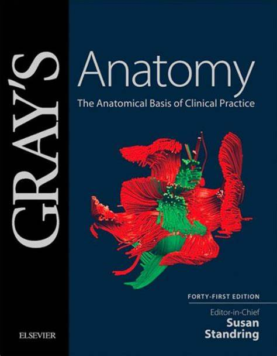
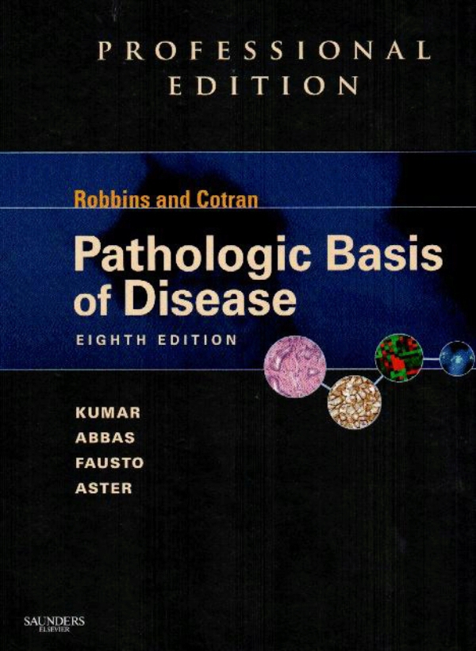
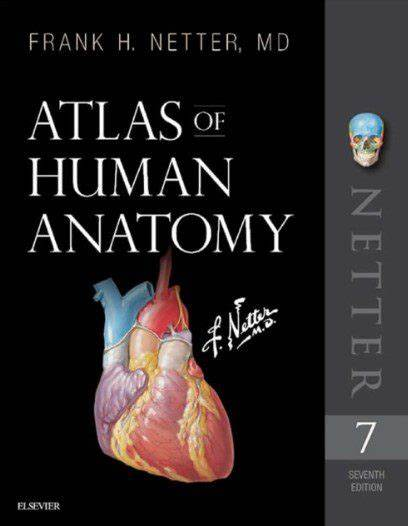

Libros de Medicina disponibles
Gray's Anatomy
Autor: Henry Gray, Susan Standring (Editor)
Edición: 41ª Edición
Descripción: "Gray's Anatomy" es la referencia definitiva en anatomía humana, utilizada por estudiantes de medicina y profesionales en todo el mundo. Esta obra ofrece descripciones detalladas de las estructuras del cuerpo humano, ilustraciones precisas y una cobertura completa de la anatomía clínica. La 41ª edición incluye contenido actualizado, con nuevos conocimientos sobre la anatomía y las imágenes más recientes de alta calidad.
OrdenarHarrison's Principles of Internal Medicine
Autores: J. Larry Jameson, Anthony S. Fauci, et al.
Edición: 21ª Edición
Descripción: "Harrison's Principles of Internal Medicine" es una de las fuentes más respetadas y citadas en medicina interna. La 21ª edición abarca una amplia gama de temas, desde la fisiopatología hasta el manejo clínico de diversas enfermedades. Con contribuciones de expertos reconocidos mundialmente, este libro es indispensable para cualquier estudiante de medicina que aspire a dominar la medicina interna.
OrdenarRobbins & Cotran Pathologic Basis of Disease
Autores: Vinay Kumar, Abul K. Abbas, Jon C. Aster
Edición: 10ª Edición
Descripción: "Robbins & Cotran Pathologic Basis of Disease" es un texto esencial para entender los fundamentos de la patología. La 10ª edición ofrece una cobertura exhaustiva de los mecanismos patológicos y sus manifestaciones clínicas. Con ilustraciones detalladas y un enfoque claro en la relación entre la patología y la práctica clínica, este libro es una herramienta crucial para estudiantes y profesionales de la salud.
OrdenarNetter's Atlas of Human Anatomy
Autor: Frank H. Netter
Edición: 7ª Edición
Descripción: "Netter's Atlas of Human Anatomy" es conocido por sus ilustraciones anatómicas detalladas y precisas. La 7ª edición presenta más de 25 nuevas placas de anatomía y actualizaciones basadas en los últimos hallazgos científicos. Este atlas es una excelente herramienta visual para estudiantes que necesitan una comprensión clara de la anatomía humana.
OrdenarGuyton and Hall Textbook of Medical Physiology
Autor: John E. Hall
Edición: 14ª Edición
Descripción: "Guyton and Hall Textbook of Medical Physiology" proporciona una explicación comprensible de los principios de la fisiología médica. La 14ª edición ha sido revisada y actualizada para reflejar los últimos avances en la fisiología y la medicina. Con un enfoque en la claridad y la precisión, este libro es esencial para entender cómo funciona el cuerpo humano en condiciones de salud y enfermedad.
OrdenarRepositorio de Libros
Hecha un vistazo a nuestro catalago de libros que tenemos disponibles en nuestro repositorio online.